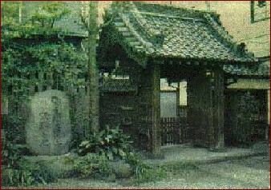

Дзигоро Кано
(1860-1938),
основатель дзюдо:
дзюдо должно стать «боевым спортом для физической тренировки и общего образования молодежи, философией, искусством повседневной жизни»

Кодокан, первая школа дзюдо. Япония. Токио.
Эта школа открыта в мае 1882 года в токийском буддийском храме Эйсёдзи. 21-летний японец Дзигоро Кано уловил ключевой момент дзюдо: "Если партнер тянет, я толкаю; если он толкает, я тяну".
КЛЯТВА ДЗЮДОИСТА
Дзигоро Кано установил, что все поступавшие в «Кодокан», должны были давать торжественную клятву, состоящую из следующих пунктов:
1. Раз я решил посвятить себя борьбе дзюдо, то не откажусь от занятий без серьезных на то оснований.
2. Своим поведением я обещаю не уронить достоинство «Дожо» (зала дзюдо).
3. Я никогда не выдам секретов школы непосвященным и только в крайнем случае буду брать уроки где-либо в другом месте.
4. Обещаю не давать уроки без разрешения на то моего учителя.
5. Клянусь в течение всей моей жизни уважать правила «Кодокана», сейчас как ученик, а позже как преподаватель, если я им стану.
Дают ли современные дзюдоисты клятву? Ответ известен посвященным.
ВЕСОВЫЕ КАТЕГОРИИ В ДЗЮДО
До 1964 года весовых категорий в дзюдо не было, то есть соревновались спортсмены в абсолютной весовой категории. В 1964 соревнования по дзюдо проводились в трех весовых категориях, 1972 - 1976 — в пяти, с 1980 — в семи. В настоящее время соревнования среди взрослых , молодежи и юношества с 17 лет проводятся в следующих весовых категориях:
| Весовая категория | мужчины | женщины |
| сверхлегкий вес (extra-lightweight) |
до 60 кг | до 48 кг |
| полулегкий вес (half-lightweight) |
60 — 66 кг | 48 — 52 кг |
| легкий вес (lightweight) | 66 — 73 кг |
52 — 57 кг |
| полусредний вес(half-middleweight) |
73 — 81 кг |
57 — 63 кг |
| средний вес (middleweight) |
81 — 90 кг |
63 — 70 кг |
| полутяжелый вес (half-heavyweight) |
90 — 100 кг |
70 — 78 кг |
| тяжелый вес (heavyweight) |
- свыше 100 кг |
- свыше 78 кг |
Взвешивание - обязательная процедура перед любыми соревнованиями, обычно за 2-3 часа перед началом борьбы.
СПОРТИВНАЯ КАРЬЕРА В ДЗЮДО
 Олимпиада.
Олимпиада.
Чемпионат Мира.
Чемпионат Европы.
Чемпионат Украины.
Чемпионат города, области.
Немногие восходят на высшую ступень.
Украинские олимпийцы:
Руслан Машуренко (90 кг) - "бронза" (Сидней-2000),
Роман Гонтюк (81 кг) - "серебро" (Афины-2004) и "бронза" ( Пекин-2008).
ОЛИМПИАДА 2012
Международная Федерация дзюдо (IJF) в марте 2009 утвердила окончательную систему квалификации для участия в турнире дзюдоистов на XXX Олимпийских Играх 2012 года в Лондоне (Великобритания). Отбор участников будет проходить на протяжении двух лет - с 1 мая 2010 года по 30 апреля 2012 года.
Всего в турнире дзюдоистов в программе ОИ-2012 примут участие 386 борцов. Впервые лицензии на ОИ именные и будут принадлежать не стране, а конкретному атлету. При этом, участвовать в ОИ может не более одного дзюдоиста от страны в каждой весовой категории. IJF ставит своей целью участие в Олимпиаде-2012 представителей 100 стран.
14 лицензий - страна-организатор ОИ - Великобритания.
20 лицензий, так называемые "wild-card", будут распределены IJF между странами, которые в результате квалификационного отбора не завоюют лицензий для участия в ОИ, но не более одной "wild-card" на страну.
252 лицензии - согласно WRL (мировой рейтинг-лист) на 30 апреля 2012 года. 22 дзюдоиста в каждой весовой категории (22 х 7 = 154) и 14 дзюдоисток в каждой весовой категории (14 х 7 = 98).
Олимпийская квалификация состоит из суммы 5 лучших результатов (период с 1 мая 2010 по 30 апреля 2011 года) - 50 % очков + сумма 5 лучших результатов (период с 1 мая 2011 по 30 апреля 2012 года) - 100 % очков.
В случае, если в олимпийскую квалификацию попадают два и более атлета из одной страны, лицензия принадлежит дзюдоисту, который занимает более высокое место в WRL, остальные атлеты этой страны из списка олимпийской квалификации исключаются, а лицензии переходят к атлетам из стран, которые занимают последующие позиции в WRL.
100 лицензий - континентальная квалификация.
Европа (50 стран) - 14 мужчин + 11 женщин = 25 лицензий.
Африка (47 стран) - 14 мужчин + 10 женщин = 24 лицензии.
Америка (42 страны) - 13 мужчин + 8 женщин = 21 лицензия.
Азия (38 стран) - 12 мужчин + 8 женщин = 20 лицензий.
Океания (17 стран) - 7 мужчин + 3 женщины = 10 лицензий.
Континентальные лицензии будут распределены между дзюдоистами, не попавшими в 22 лучших WRL - у мужчин и 14 лучших WRL - у женщин. При этом, континентальную лицензию может получить не более одного атлета от страны на все весовые категории и не более двух стран от континента в каждой весовой категории.
Турнир дзюдоистов на Олимпиаде-2012 в Лондоне пройдёт по олимпийской системе. Право на утешительные поединки получат лишь 4 дзюдоиста, проигрвших в четвертьфинале.
Восемь лучших в каждой весовой категории, согласно WRL (на 30 апреля 2012) по жеребьёвке рассеиваются.
Таблица начисления очков для WRL (мировой рейтинг-лист)
| Место | Кубок
Мира
| Гран
При
| Grand
Slam | Masters | Чемп
Мира
| ОИ | Чемп
конт
| Чемп OJU |
| 1 | 100 | 200 | 300 | 400 | 500 | 600 | 180 | 80 |
| 2 |
60 | 120 |
180 | 240 | 300 | 360 | 10 8 | 48 |
| 3 |
40 | 80 | 120 | 160 | 200 | 240 | 72 | 32 |
| 5 |
20 | 40 | 60 | 80 | 100 | 120 | 36 | 16 |
| 7 |
16 | | | | 80 | 96 | 28 | 12 |
| 1/16 |
12 | 24 | 36 | | 60 | 72 | 20 | 12 |
| 1/32 |
8 | 16 | 24 | | 40 | 48 | 12 | 8 |
| 1 победа |
4 | 8 | 12 | | 20 | 24 | 8 | 4 |
участие |
| | | | 4 | | | |
Первые 12 месяцев после завершения соревнований начисляется 100% очков, следующие 12 месяцев - 50% очков, через 24 месяца после завершения соревнований очки аннулируются. Для начисления очков в WRL необходимо одержать минимум одну победу. В случае, если дзюдоист не выиграл ни одной схватки - очки не начисляются.
WRL формируется из суммы пяти лучших результатов за последние 12 месяцев - начисляется 100% очков и пяти лучших результатов за последние 13-24 месяца - начисляется 50% очков.
В случае равенства очков очков более высокое место в WRL занимает дзюдоист:
1) имеющий большую сумму очков, набранную только на чемпионатах мира;
2) имеющий большую сумму очков, набранную только на турнирах "Гран-При", "Grand Slam" и "Маsters";
3) имеющий больший первый результат, в случае равенства второй результат и т.д.;
4) в случае равенства всех этих показателей, решение принимает исполнительный комитет IJF, этот пункт применяется только к олимпийской квалификации.